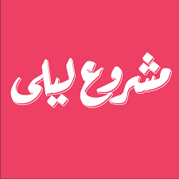
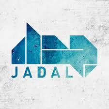

This website concentrates on two major bands from two different countries. These bands have broken the norm when it comes to traditional arabic music, they have experimented with differnt music genres and adapted them to the arabic language and the arabic culture
A five-member alternative rock band from Lebanon. The band formed in Beirut, Lebanon in 2008 as a music workshop at the American University of Beirut. The band causes many controversies due to their satirical lyrics and themes that exist in the four studio albums that they released.
The name of the band either translates to an over night project, or to Leila's project, the band members never say which one is the right meaning in interviews, they either say that the band formed over night or that there was a woman who sold then manakeesh and her name was Leila
to know more about the band check out their website or watch their videos on youtube . You could also follow then on instagram for recent pictures and news.
An arabic rock band and music project from Amman Jordan, Jadal was formed in 2003 by composer/ music producer/ guitarist Mahmoud Radaideh. They released their first single 'El Tobah' (repentance), a cover of Abdel Halim Hafez's legendary love song, their musical style, coined as arabic rock, was described as 'groundbreaking' due to its unique blend of rock and arabic. They now have three released albums
The band's name translates to controversy, as this is what they create with their music, passionate and energetic in nature. Their energy is what makes them stand out as they set the stage alight, and make the audience roar.
for more information about the band visit their website or watch their music videos on youtube . You could also listen to their music on soundcloud or follow them on instagram to see thier pictures and know their latest news.